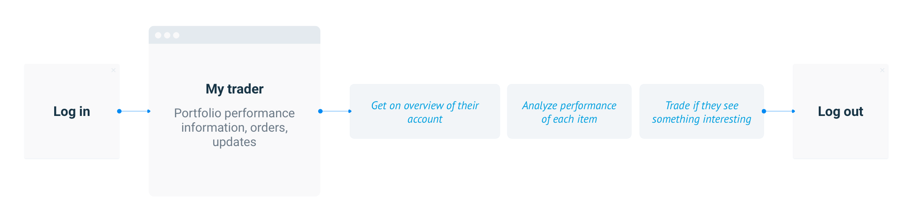
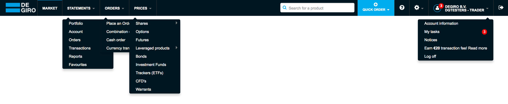
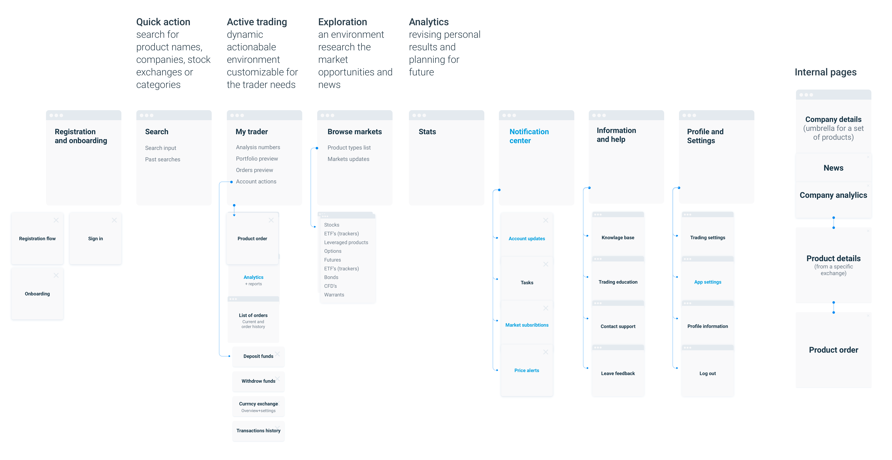

May 2018
DEGIRO Trading Platform
re-design
In 2017 DeGiro Trading Platform became one of the five biggest brokers in the world and by far the largest in Europe, beating the competitors with lower fees and a huge selection of products. As a product designer I was part of an ambitious project to redesign the Platform and Trading experience and prepare it to scale. I am going to share with you the work I have done and what I have learnt.
The challenge
In just 4 years
DeGiro
revolutionized the trading industry making it accessible to millions of people across the globe.
The web platform (designed in 2013) and the mobile app (designed a couple of years later) struggled to keep up alongside the growth of the company.
The applications were not able to add any more functionality without ruining performance and user experience. They were hard to navigate, the code base became unmaintainable.
The current desktop and mobile apps
My role
I was working alongside with the Project Manager and Frontend Engineer to create the prototype of the shiny new platform.
Design workflow
That's an exciting challange to tackle such a massive project basically by myself. But it's easy to get overwhelmed and follow the wrong path working solo on the. That's why I have created a working plan that helped me to keep the zoom on the big picture and forced to verify the ideas early enough. Here is the summarized version:
1. Analyze the current product
- Define core user goals and tasks
- Find weak parts in the current platform, where user tasks are done inefficiently
- Find more growth opportunities
2. Research
- Get to know direct and indirect competitors, their products, pro’s and con’s, finding differences in products and the target audience
- Find interesting ideas and solutions from other fields, such as smooth user flows, UI ideas etc.
- Self-education: get familiar with the market and industry, its history, potential, future expectations and disruptive innovations.
- Get to know your user, what would be the target audience(s), their background, values, other products they are using, etc.
3. Roadmap:
- 5 years
- 5 months (MVP version for the first release)
- 5 weeks
4. Architecture
- Define main user jobs and related user flows
- Map out the product architecture
5. Wireframes
- Design the basic UI: responsive layouts, navigation, interactions
- Make the first level of fidelity for the core screens and user flows (paper sketches)
6. Discuss
- Make sure user goals do not conflict with business goals
- Talk to developers to understand technical boundaries
- Prioritize
7. Design language
- Basic color palette, typography, basic brand elements
- Set the tone of voice
- Set up the design environment (libraries and files system)
8. Test and get feedback
9. Make the implementation plan and get started
11. Iterate
I apply this workflow on different scales - gradually zooming in from the rough concept to an every feature design, jumping from the last step back to the first one, adding more details and verifying decisions made in previous phases. It's like an artist painting a picture - sketching the general shapes first and adding more details layer after layer (my fine arts education has proven to be useful in an unexpected manner).
Phase 1. Research.
I have started with investigating what are the user’s motivations and most common user journeys. it turned out there are radically different way people used the app:- Long-term investing - they would buy and keep for a longer period, waiting for selling prices to rise
- Day trading - they would buy and sell hundreds times a day, gaining on price differences
These are completely different use cases, but people use exactly the same interface to perform them.
Here is the most common daily user flow for an investor:

Optimised investor flow:
It illustrates how they tend to skip the homepage with irrelevant functionality, to go straight to their portfolio analytics.
“Think big, start small”
Product architecture
The current solution was build feature after feature without considering much how they logically connect to each other.
Here is the top navigation of the web app: 
..and it's schematic representation:

Just looking at this map easy to see some possible improvements: some links are doubled, some could be grouped together, other splitted.

After cleaning up and brainstorming the future ambitions, in multiple iterations, we ended up with a new architecture:
Optimised architecture. Blue titles - new functionality.
Navigation
Responsivness
From the beginning, we have decided to build a responsive web app so I had to design keeping at least three possible layouts in mind. We ended up with five of them - Desktops, Laptops, Tablets, Mobiles in portrait and landscape orientation.
Switching across platforms has to be as seamless as possible. Often Mobile apps and their desktop alternatives have very different navigation logic, not mentions that functionality can be limited as well. Every time you switch a device, you need to learn how to use it again.
Here comes the value of having a little number of sections - it is not only easy to navigate and remember, but also scales down easily. We limited ourselves to five items- that's what we want to keep visible in the smallest devices.
Read more about creating this navigation layout here
“Involving people on early stages and listening to their feedback you make them being true owners of what your are making”
The value of low fidelity
I always start with sketches on paper, not only for myself but also to discuss work progress with stakeholders.
It is important that everyone understands that UX is not UI, and UI is not only about colours and buttons. If I show a new concept in high fidelity then people pay attention to wrong details – that new shade of gray, unclear icon or typo in copy, but not on the concept itself. Using low fidelity help you to filter unnecessary details and keep focus on what is important, even if you can’t wait to make it pretty.
Getting feedback
I believe that getting feedback as early as possible is essential for building a healthy product. I find the feedback from fellow designers the least valuable, most of the time they either too focused on visual details, either they have the same thoughts as myself because of our similar background. The most valuable feedback I get from people, whos jobs and views are totally different from mine.
Talking to developers
I try to get developers involved as early as possible. They can give a lot of insights regarding the technologies that can and going to be used, you can find solutions out of the box (no need to reinvent the wheel every time). I think a mistake most designers make - they just shoot their polished mockups to developers and expect those would implement it pixel-by-pixel.
Responsive Web app vs. Native apps
The decision was to develop a brand new responsive React App instead of current Desktop (Early Angular) and Mobile (hastily stitched React App).
Quite a brave decision that has some pro’s and con’s:
Advantages:
- Keep costs down: Maintaining one code base is easier then 2 or more.
- Consistency across devices. Keeping in mind mobile version while designing the desktop would force us to be more conscious of our design choices and not let redundancy into the desktop version.
- Longer life-time: There will be always more screen sizes and devices, OS requiments will change, responsive version would cover them better.
Disadvantages:
- Performance. Native apps often faster and have more functional perks, like gestures and access to the device resources.
- Code complexity. Too many responsivness conditions can overcomplicate code, it's also harder to onboard new team members.
Crafting the new interface
Responsive layouts and basic components
I tried to design the layout and components in a way that they can be easily re-used on different screen resolutions. Vertical panels are very powerful – they allow to use the maximum of space on larger screens, and naturally land in mobiles. Weanwhile the components inside them stay the same everywhere.


Design system and tools
Read more about the design system, tools and the process here